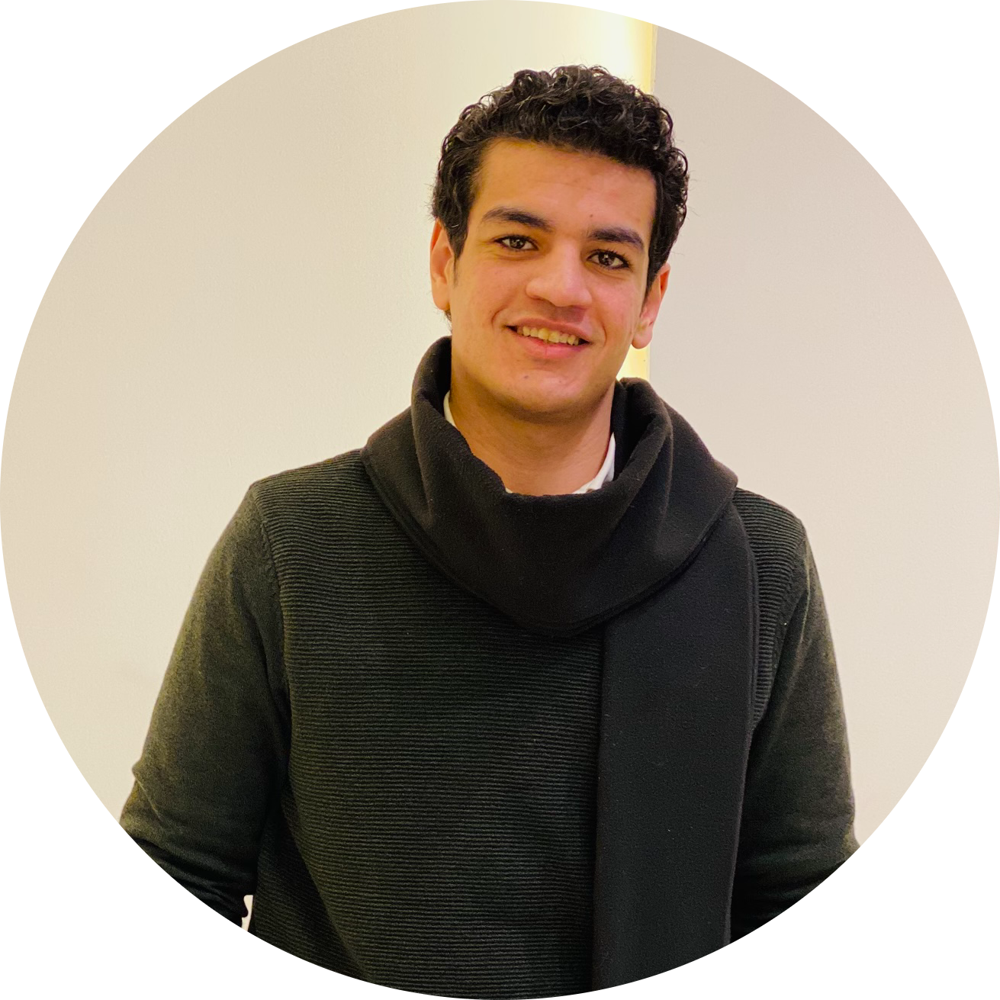

|  | Walid AymanI graduated from King marriott academy. I have a bachelour in Networks & Communications engineering. |
| Nationality: | Egyptian |
| Date of Birth: | May, 4, 1997 |
| Address: | Suhaj – Egypt |
| Marital status: | Single |
| Military status: | Exempted |
Higher Institute of Engineering & Technology – King Marriott (ALEXANDRIA) 2015 – 2020.
Bachelor of Electrical engineering from Communication & Electronics Department.
| Cumulative Average: | Good |
| Graduation Project: | IOT MINESWEEPER |
| Project Degree: | Excellent |
| Arabic Language: | Mother Tongue |
| English Language: | Intermediate: listening, reading, writing and speaking. |